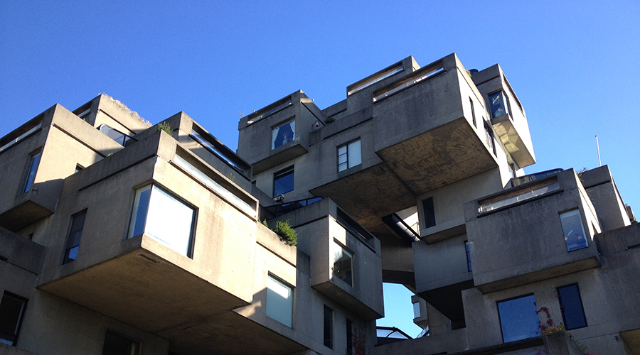
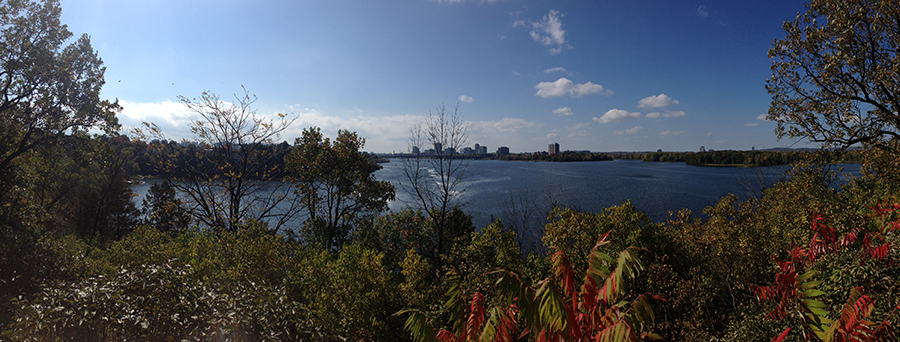
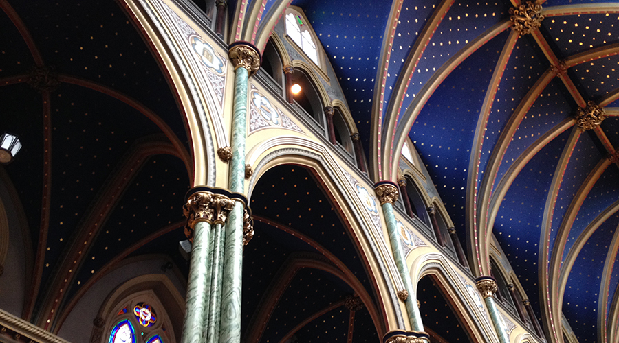

Canada Field Study
Visiting our northern neighbors for an exercise in architecture
Field trip week at Ball State is something any CAP student is familiar with. Second-year architecture students surely remember their field study to Canada. This is my experience from our week-long trip to Montreal, Ottawa, and Toronto.
The sheer variety of the places we visited was enough to keep us busy. Montreal, a French-based city, was home to decades of design. While in the city, we visited Habitat 67, the Canadian Centre for Architecture, Palais des Congres, the Montreal Theatre Building, and Mary, Queen of the World Cathedral. In addition, we had the opportunity to visit Saint Joseph's Oratory, the largest dome of its kind in the world, after that of Saint Peter's Basilica. We also spent a morning at the Olympic Stadium of 1968, a fantastic structure that actually was a huge failure at its time.

Ottawa, which is rooted in English history, was left beautifully natural with master feats of architecture to designate it as the capital of Canada. Ottawa was home to many museums and national buildings, such as the Peace Tower, Canadian War Museum, National Gallery of Canada, Library of Parliament, the Supreme Court of Canada, Christ Church Cathedral, Notre-Dame Cathedral, and many more.
Toronto, much more American in its heritage, resembles New York with its busy urban cityscape. Some buildings we visited include Toronto City Hall, the Royal Ontario Museum, Roy Thomson Hall, the golden National Bank of Canada, and of course, the tower that kept peeking out from behind the many skyscrapers, .
Toronto, much more American in its heritage, resembles New York with its busy urban cityscape. Some buildings we visited include Toronto City Hall, the Royal Ontario Museum, Roy Thomson Hall, the golden National Bank of Canada, and of course, the tower that kept peeking out from behind the many skyscrapers, .
I was particularly taken by the delicate metalwork of the Allen Lambert Galleria in Brookfield Place in downtown Toronto. This feat, designed by none other than Santiago Calatrava, became the primary precedent for a semester-long study of farmer's markets and zebra stripes. Wonder how that came about? Visit this page to find out how!